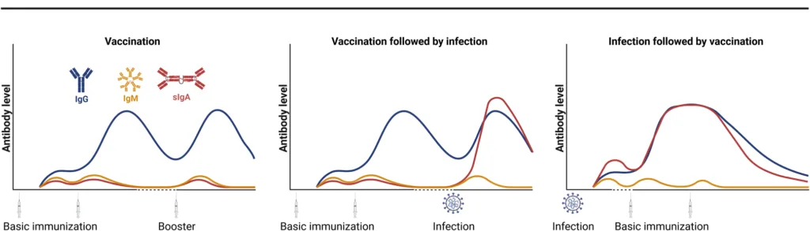

Expanded Nursing Uganda Explanation
Vaccines and Immunoglobulins) should be reviewed through safe maternal and newborn assessment, early recognition of danger signs, respectful communication and timely referral. Connect the definition to vital signs, bleeding, fetal or newborn wellbeing, patient education and local protocol requirements.
01 Vaccines and Immunoglobulins
Vaccines are special preparations of antigenic materials that can be used to stimulate the development of antibodies and thus confer active immunity against a specific disease or a number of diseases .
Vaccines may be single component or mixed combined vaccines.
Types of Vaccines
Live Attenuated Vaccines : These vaccines contain live microbes that have been weakened (attenuated). Live attenuated vaccines usually confer immunity with a single dose which is of long duration. They may be dangerous in recipients who are immunocompromised because these patients are unable to mount an effective immune response.
Examples:
- Mumps vaccines
- Measles vaccines
- BCG vaccines
- Rubella vaccines
- Chickenpox vaccines
Killed or Inactivated Vaccines : This type of vaccine contains whole inactivated microbes. Inactivated vaccines may require a series of injections in order to produce an adequate body response and in most cases booster doses are required.
Examples:
- Polio vaccines
Toxoids : Toxoid vaccines use bacterial toxins that have been rendered harmless. Administration of the toxoid causes the recipient’s immune system to manufacture antitoxins directed against the bacterial toxins.
Examples:
- Tetanus toxoid
Immunity
Immunity is the body’s ability to resist infections afforded by the presence of circulating antibodies and white blood cells .
Types of Immunity
- Active Immunity : Active immunity is induced by the administration of microorganisms or their products which act as antigens to induce the body to produce antibodies.
- Passive Immunity : Passive immunity is obtained by injecting preparations made from the plasma of immune individuals with adequate levels of antibodies to the disease for which protection is sought. Treatment should be given as soon as possible after exposure for effective results. This type of immunity lasts for only a few weeks.
Available Preparations:
- Oral suspension of live attenuated poliomyelitis virus
Indications :
- Active immunization against poliomyelitis
Contraindications :
- Hypersensitivity to any of the ingredients
- Patients with diarrhea or vomiting
- Immunocompromised patients
- Pregnancy
Dosage :
- 2 drops at birth
- 2 drops at 6 weeks
- 2 drops at 10 weeks
- 2 drops at 14 weeks
Side Effects:
- Rarely seen
Drug Interactions:
- Concomitant administration with immunosuppressant drugs
Key Issues to Note:
- Live polio vaccine loses potency once the container has been opened; therefore, discard any unused preparation
- Breastfeeding does not interfere with immunization even though polio antibodies may be excreted in breast milk
- If the vaccine is vomited, repeat the dose immediately
- A child who has previously had polio should nevertheless be immunized to offer complete protection
Available Preparations:
- Injection powder for solution (live attenuated measles virus)
Available Brands : Sii® measles vaccine live
Indications :
- Active immunization against measles
Contraindications:
- Hypersensitivity to any antibiotic present in the vaccine
- Hypersensitivity to eggs
Dosage :
- 0.5 ml SC at 9 months (left upper arm)
Side Effects:
- Fever
- Malaise
- Thrombocytopenia
- Headache
- Rashes
Key Issues to Note:
- Vaccination is recommended in all children at the age of 9 months
- Maternal antibodies may interfere with an effective immune response to the vaccine if given in the first 6 months of life
- The vaccine may be given at 6 months in case there is an outbreak in the community
- Vaccination should not be given to patients with untreated active tuberculosis
Available Preparations:
- Injection of live attenuated measles, mumps, and rubella virus
Available Brands : Sii® measles, mumps, and rubella vaccine, Trimovax®, Priorix®
Indications :
- Active immunization against measles, mumps, and rubella
Contraindications :
- Pregnancy
- Hypersensitivity to any antibacterial such as neomycin or kanamycin used in the manufacturing process
- Immunosuppressed patients
Dosage :
- By deep SC or by intramuscular injection 0.5 ml (12-15 months)
Side Effects:
- Fever
- Parotid swelling
- Malaise
- Rash
Drug Interactions:
- Concomitant administration with immunosuppressant drugs
Available Preparations:
- Powder for injection of live bacteria of a strain derived from the bacillus of Calmette and Guerin
Indications :
- Active immunization against tuberculosis
Contraindications :
- Generalized edema
- Immunosuppressed patients
- Antimycobacterial treatment
- Previous TB infections
- Generalized skin diseases
- Tuberculin reaction > 5 mm
Dosage :
- 0.05 ml intradermally in the right upper arm (infants less than 12 months)
- 0.1 ml intradermally on the right upper arm (adults and children greater than 12 months)
Side Effects:
- Keloid formation
- Lymphadenitis
- Localized necrotic ulceration
- Anaphylaxis
- Disseminated BCG infection in immunosuppressed patients
Drug Interactions:
- Concomitant administration with immunosuppressant drugs
Available Preparations:
- Powder for injection
Available Brands : TriPacel®, Infanrix®
Indications :
- Active immunization against diphtheria, tetanus, and pertussis
Dosage :
- Infant: 0.5 ml by intramuscular or deep SC injection at 6, 10, and 14 weeks
Side Effects:
- Irritability
- Restlessness
- Limb swelling
- Malaise
- Peripheral neuropathy
- Myalgia
- Urticaria
- Headache
- Fever
- Loss of appetite
Available Preparations:
- Injection
Available Brands: Sii® tetanus toxoid vaccine, Tetavax®
Indications :
- Active immunization against tetanus and neonatal tetanus
Dosage :
- Women 15-45 years of age including pregnant women: 0.5 ml deep SC or intramuscular injection at first contact or as early as possible during pregnancy (TT1)
- TT2 (0.5 ml) at least 4 weeks after TT1 or during subsequent pregnancy
- TT3 (0.5 ml) at least 6 months after TT2 or during the subsequent pregnancy
- TT4 (0.5 ml) at least 1 year after TT3 or during subsequent pregnancy
- TT5 (0.5 ml) at least 1 year after TT4 or during subsequent pregnancy
Note: To achieve lifelong protection against tetanus, 5 doses of TT are required.
Side Effects:
- Peripheral neuropathy
Available Preparations:
- Injection 1500 IU
Available Brands : Tetanea®
Indications :
- Passive immunization against tetanus as part of the management of tetanus-prone wounds
Dosage :
- Adult and Children: 1 ml by IM injection. Give additional dose if wound is older than 12 hours or heavily contaminated
Side Effects:
- Local reactions
- Fever
- Pain and tenderness at the site of injection
- Headache
Available Preparations:
- Injection powder + solvent of live attenuated virus
Available Brands: Stamaril®
Indications :
- Active immunization against yellow fever
Contraindications :
- Immunosuppressed patients
- Known hypersensitivity to any of the ingredients
- Infants under 4 months of age
- Hypersensitivity to eggs
Dosage :
- Infants at 9 months: 0.5 ml by SC injection
- Immunization of travelers and others at risk:
- Adult and Children over 9 months: 0.5 ml
- Infants 4-9 months: 0.5 ml only if the risk of yellow fever is unavoidable
Side Effects:
- Headache
- Fever
- Weakness
- Diarrhea
- Myalgia
- Influenza-like symptoms
- Nausea
Drug Interactions:
- Concomitant administration with immunosuppressant drugs
- Cholera vaccine should not be given together with yellow fever vaccine
Available Preparations:
- Injection VI capsular polysaccharide typhoid 25 mcg/0.5 ml
Available Brands : Typhim Vi®, Typherix®
Indications :
- Active immunization against typhoid
Contraindications :
- Immunosuppressed patients
- Febrile illness
- Known hypersensitivity to any of the ingredients
Dosage :
- Adult and children over 2 years: By deep SC (subcutaneous) or intramuscular 0.5 ml with booster doses every 3 years for those at continued risk
Side Effects:
- Headache
- Allergic reaction
- Myalgia
- Fever
- Nausea
- Malaise
- Swelling and pain
Key Issues to Note:
- Typhoid fever prevention becomes effective after 2-3 weeks after injection
- Typhoid is rare in children under 2 years; therefore, to immunize in this age group should be based on the risk of exposure
- The vaccine offers protection for a minimum duration of 3 years
Available Preparations:
- Injection in form of 23-valent polysaccharide vaccine 25 mcg/0.5 ml
Available Brands : Pneumo 23®
Indications :
Immunization against pneumococcal infections in:
- Sickle cell disease in children over 2 years of age
- Immunocompromised patients over 5 years at increased risk of pneumococcal infection
Contraindications :
- Severe allergic reaction to any of the ingredients
Dosage :
- Adult and children over 2 years: 0.5 ml deep SC or IM as a single dose
Side Effects:
- Fever
- Myalgia
- Pain and erythema at injection site
Key Issues to Note:
- Revaccination is recommended every 5-10 years in high-risk patients
Available Preparations:
Injection
- Bivalent vaccine from group A and C
- Tetravalent vaccine from groups A, C, Y, and W135
Available Brands: Meningo A + C®, Mencevax ACWY®
02 Nursing Uganda Clinical Lens
Use Vaccines and Immunoglobulins) as a practical nursing topic, not only a memorized definition. Read the topic through the safety of two patients: the mother and the fetus or newborn.
- What to understand first: define vaccines and immunoglobulins), identify the normal or expected pattern, then explain what changes when the patient is unwell.
- Why it matters in care: the nurse must recognize risk early, explain findings clearly, document accurately and know when to escalate.
- How to revise it: connect each point to assessment, nursing diagnosis or care problem, intervention, rationale and evaluation.
03 Assessment Guide
- Maternal vital signs, bleeding, pain, contractions, uterine tone and danger signs.
- Fetal or newborn wellbeing, feeding, temperature, breathing and activity.
- History of pregnancy, parity, medications, allergies, investigations and referral risks.
04 Nursing Priorities, Rationales and Outcomes
- Recognize danger signs early and escalate without delay.
- Provide respectful communication, privacy, infection prevention and clear documentation.
- Teach the mother what to monitor at home and when to return urgently.
The rationale for these priorities is patient safety: nursing actions should prevent deterioration, reduce discomfort, support recovery and create clear evidence for the next caregiver.
- Expected outcome: Mother and baby remain stable, danger signs are acted on early, and the family understands follow-up instructions.
05 Patient Teaching and Revision Check
- Explain vaccines and immunoglobulins) in simple language the patient or caregiver can repeat back.
- Teach warning signs, medicine or follow-up instructions, hygiene or lifestyle points where relevant.
- For exams, prepare a short answer using: definition, causes or risk factors, signs, assessment, management, complications and prevention.
- For ward practice, document baseline findings, actions taken, patient response and the plan for review.
Illustrations and Diagrams (1)

Related Video Lectures
Watch nursing lecture videos on YouTube for this topic. Opens in a new tab.
Watch on YouTubeExternal link: YouTube may use its own cookies and terms. Nursing Uganda is not affiliated with YouTube.